Music by Norell 𓏲𝄢 Music
Now Playing:


Norell's single, "Champion Mindset", has received radio airplay and press coverage in the USA, Canada, Mexico, Italy, Spain, Portugal and more!
Check out this review of "Champion Mindset" by Mexico's La Caverna:

Check out this review of "Champion Mindset" by Canada's From The Strait:


To Be Frank is a four-track EP that is the 2.5 album release by The Band Famous. Nearly the entire project was completed solely by co-founder and lead singer-songwriter, Norell, with the exception of the final track, "On Top".

Norell's single "Mermaid Energy" was featured and reviewed and even on the radio in Brazil on Heatwave:

To Be Frank was released everywhere, in digital format, as well as via CD.
Norell's single "Golden Rule" opens the EP, following with "Space Jam", featuring psychedelic rock vibes!

Last Words, the debut album by The Band Famous, was once an app-exclusive album for iOS and Android; it was re-mastered and re-released on it's 11-year anniversary on June 13th, 2025!

The debut album, which is now available everywhere, was previously discussed on Minnesota Public Radio Local Current Blog and 89.3 FM The Current in the Twin Cities.
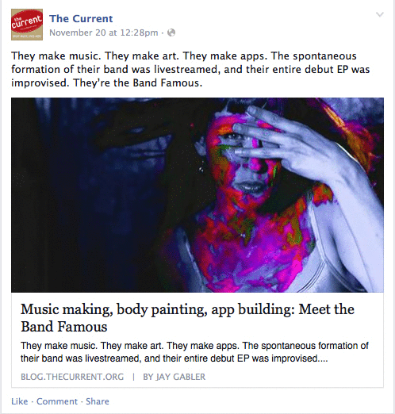
"Escape", track #3 from the album, was featured in international artist Olek's Virtual Reality exhibition in NYC!

Greg Deocampo, cofounder of Adobe After Effects and the Hoverboard program, who did visuals for U2's World Tour, and once made a website for Prince, recommended The Band Famous debut app album on his personal blog:
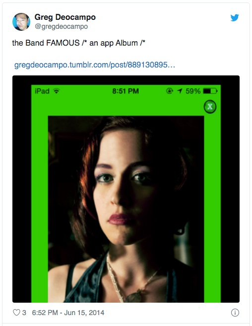
Awakening EP is the 2nd album put out by The Band Famous, featuring six tracks, some receiving written acclaim and even radio airplay.

The album was released everywhere, in digital format, as well as via CD.

"Emotional Scatter" is the hit single from TBF's Awakening EP.
The music video premiered on City Pages, and was retweeted by comedian Tom Green!


Norell, pictured with comedian and jack of all trades, the one-and-only Tom Green:

Actor, comedian, filmmaker and musician, Tom Green, talked about TBF's music with singer Norell on his CBS Radio Show, The Tom Green Radio Show:
“Your band is exciting, you have an exciting - would you call it an industrial metal band? What is it more of a pop, pop industrial alternative band?”
Capital One 360 Cafe played their music at their Los Angeles location!
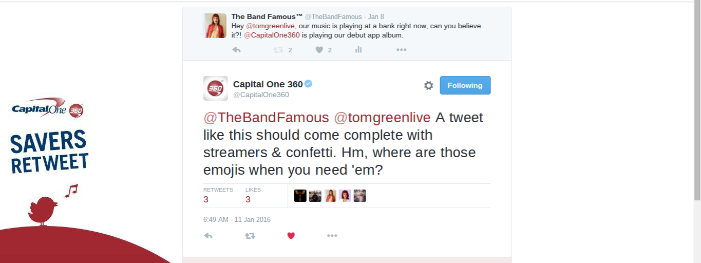
A fan at Capital One 360 Cafe showing off The Band Famous app album downloaded on their smartphone:
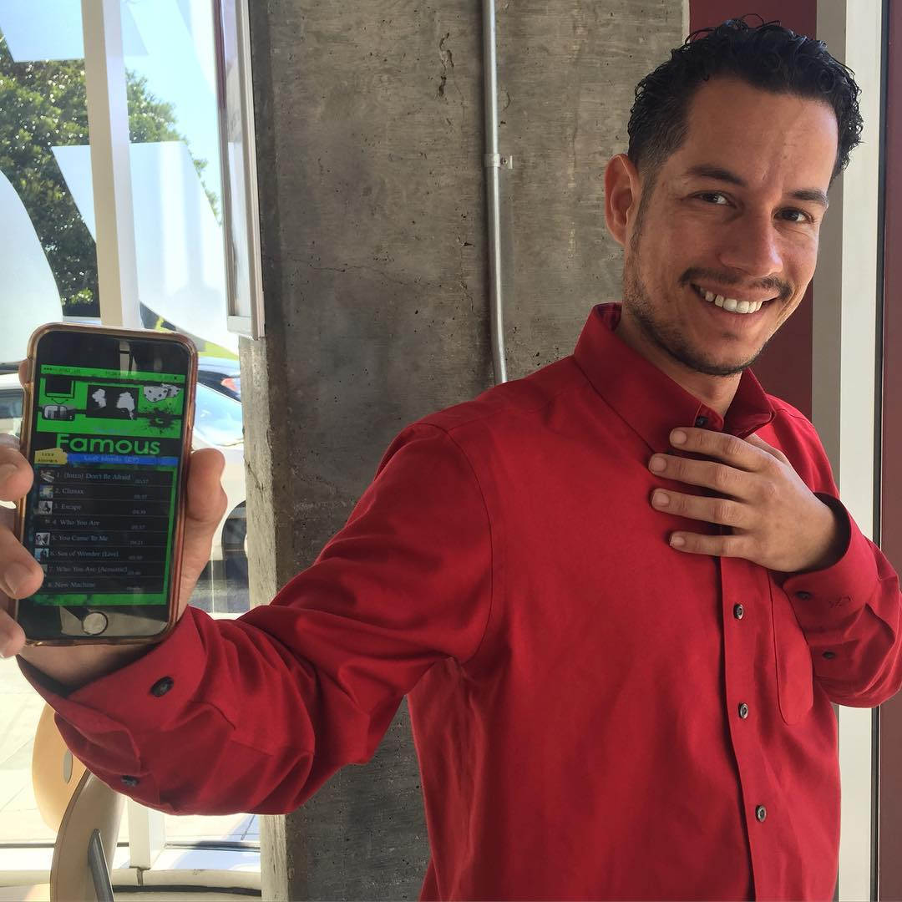
The band was grateful to receive support from hip hop icon, Slug of Atmosphere:

Slug helped spread the word on the band's "Party for a Purpose" events with several charity events in the past produced by TBF:

Dawn Robinson of En Vogue and Lucy Pearl is one of Norell's heroes. She used to listen to them on cassette tape as a little girl with big dreams, and this, too, would come full circle with one of her heroes saying she adores Norell and loves her singing voice:


Grammy winning and Hall Of Fame recording and performing artist, BJ Thomas, said this of the music:
"Band Famous!! This is my favorite new music. This girl just steps up and sings her heart out. I love that. BJ"

Fun fact: BJ Thomas was the first concert young Norell ever attended! That first meeting would come full circle, with BJ Thomas being one of the band's most notable supporters.

Norell performing at Gay 90s in Minneaoplis circa 2014:
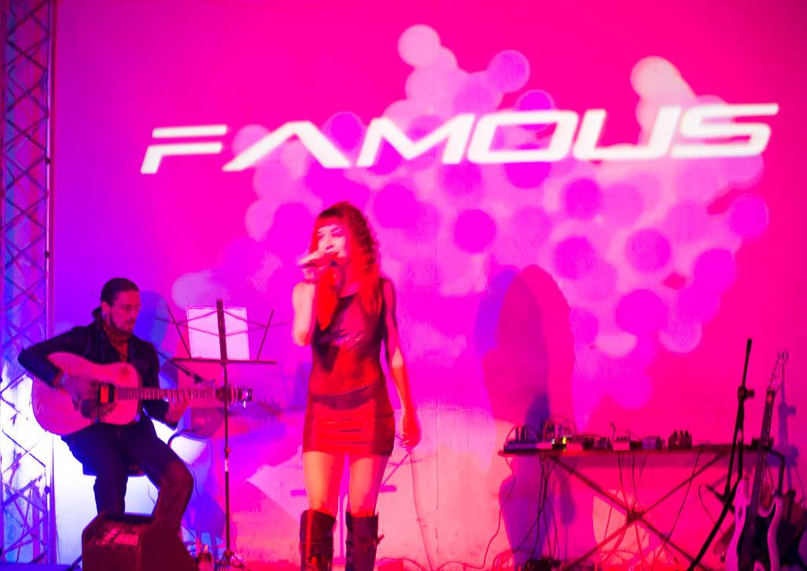
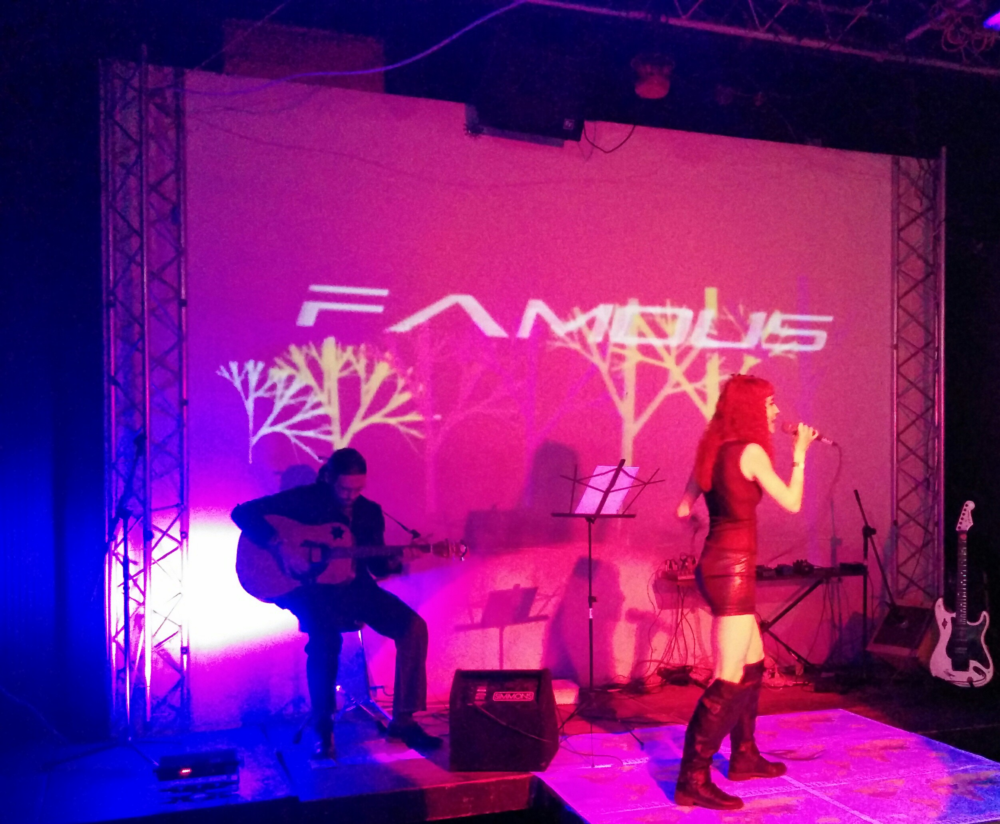
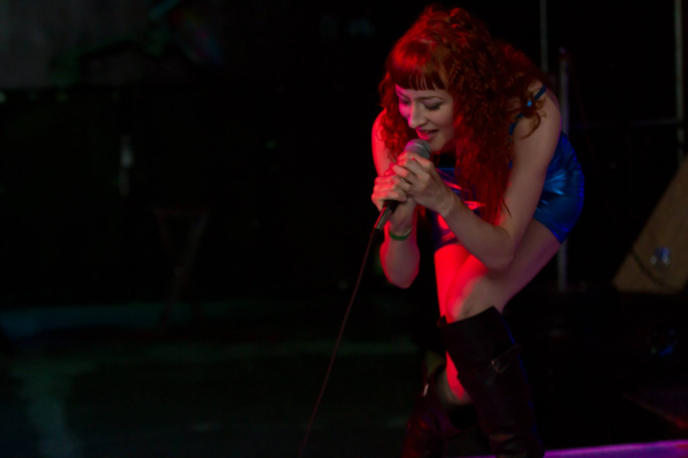
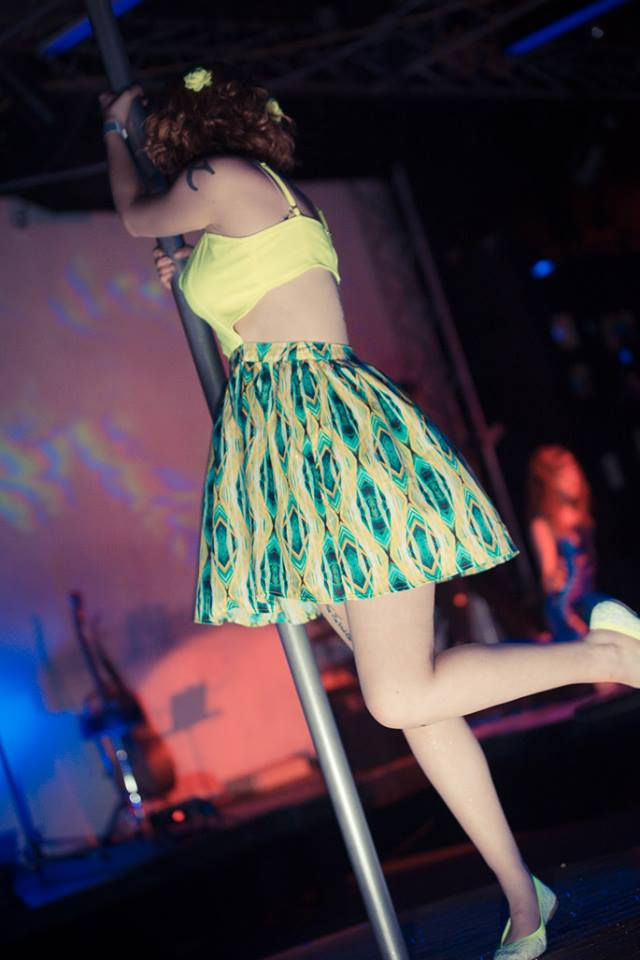
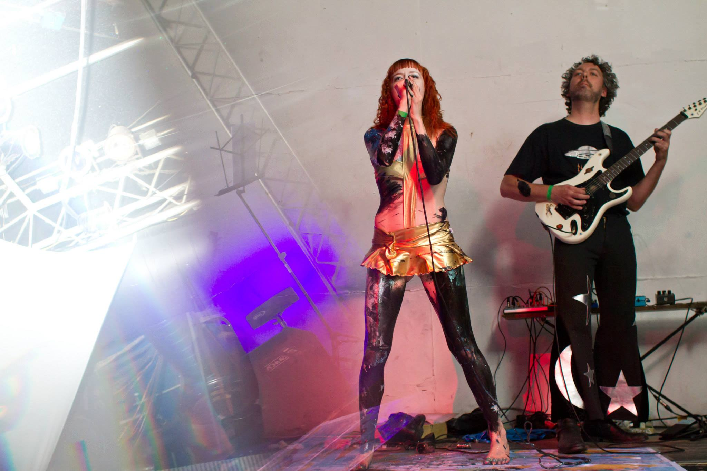
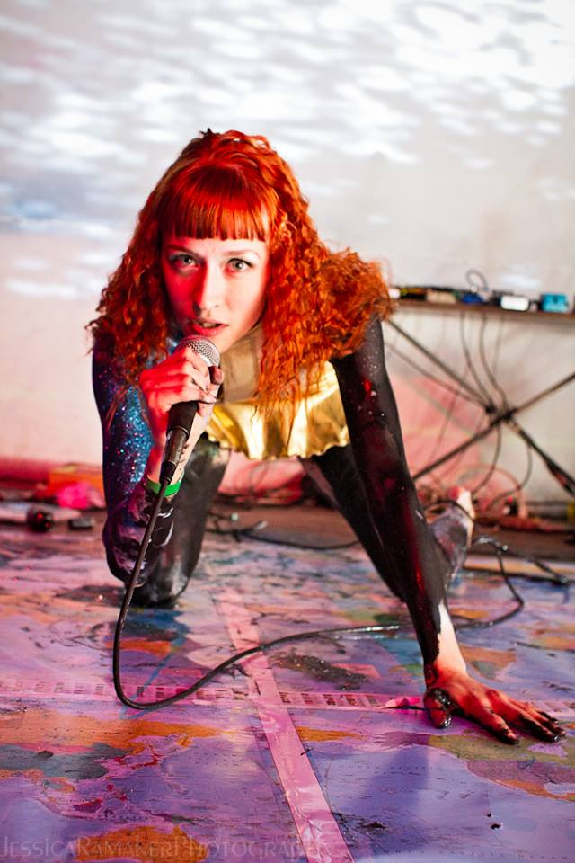
Official Merchandise
Support Norell's music when you shop small at her female-founded Etsy shop featuring apparel, home items, her custom essential oil fragrance blends, and more!
Featured Items:
|
The Kurt Cobain Tee by Norell: 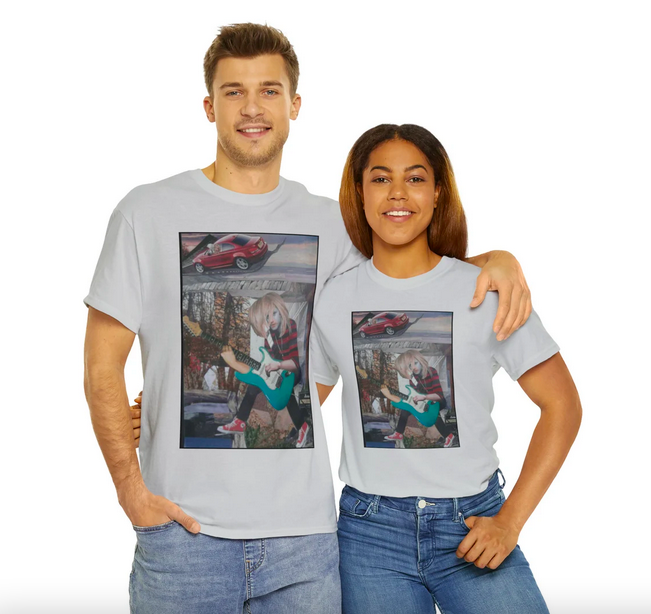 |
|
The Kurt Cobain Mug by Norell:  |
|
Last Words Graphic Tee:  |
|
Mermaid Energy Flask:  |
|
Signature Essential Oil Fragrance Blend, Mary's Secret: 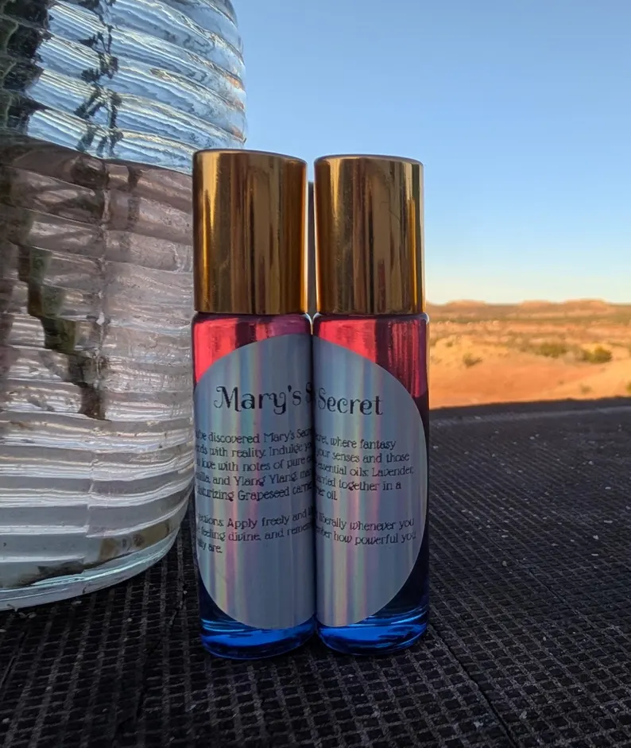 |
|
Signature Essential Oil Fragrance Blend, Norell's Garden: 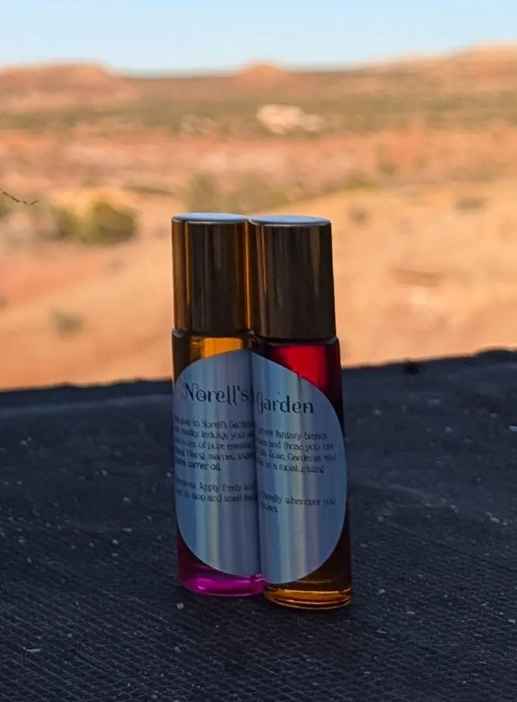 |
Check out this recent interview with Norell by European Indie Music Network:

Norell won a Sennheiser EW-D Wireless Microphone, a giveway from Music Industry News, on May 15, 2015!

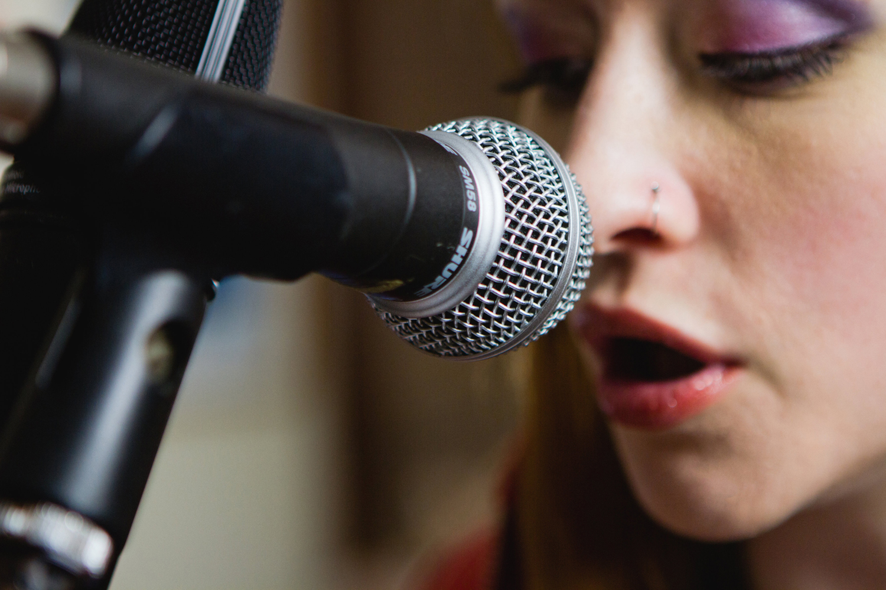
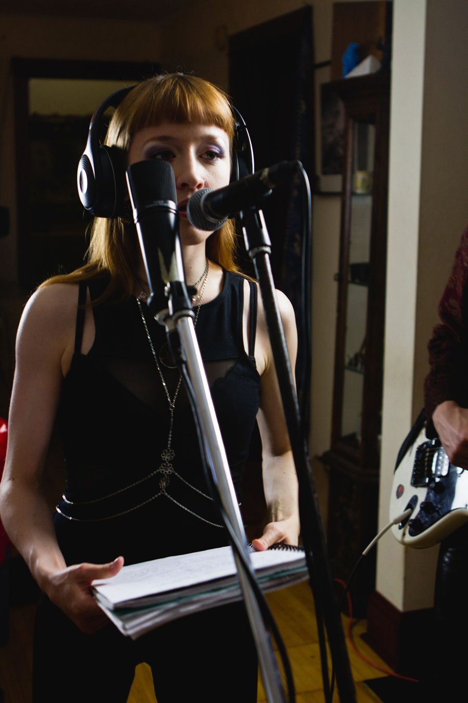

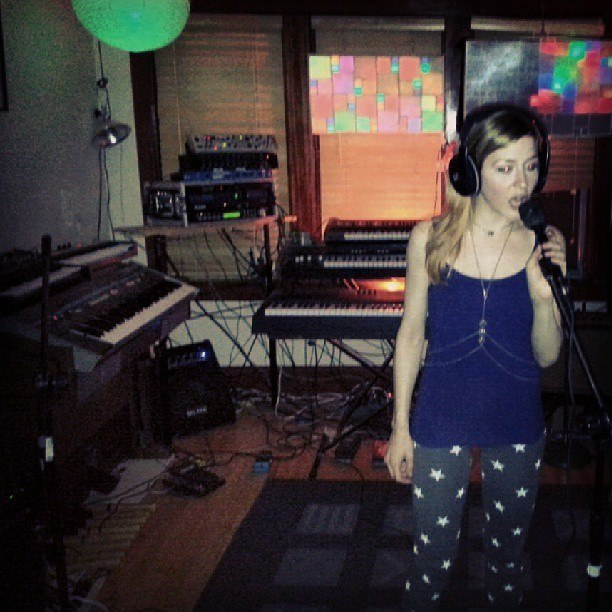